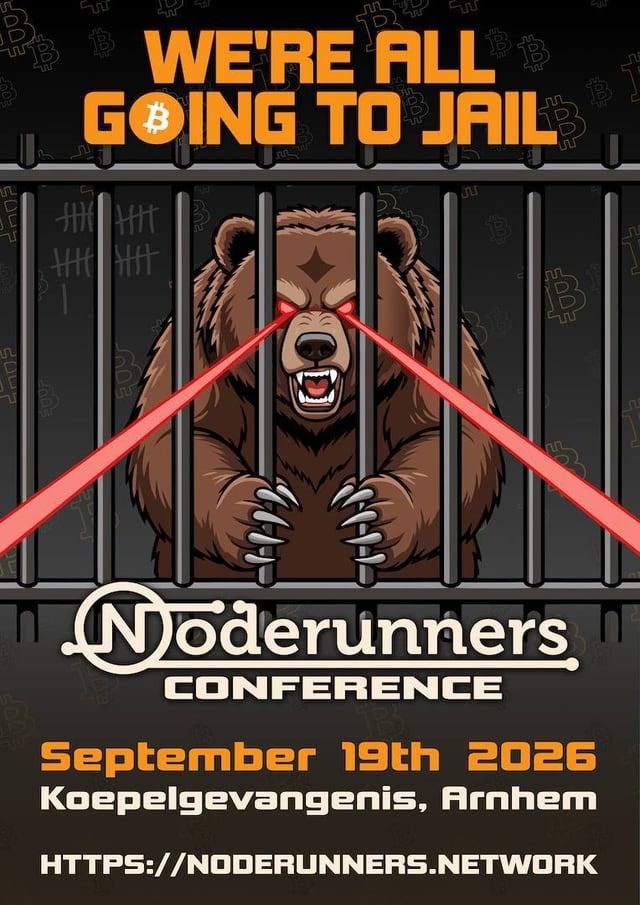

Zaterdag 19 september 2026 · 11:00-18:00
Noderunners Conference 2026
Koepelgevangenis Arnhem, Koepelkazerne 52, 6826 KL Arnhem
NodeRunners Conference 2026 vond plaats op 19 september 2026 van 11:00 tot 18:00 in de Koepelgevangenis Arnhem, met talks en workshops over Bitcoin, mining, nodes en Nostr.